Описание процесса создания. MGIMO×AI Challenge, номинация «Вайб-кодинг», задание «Цифровой деканат будущего»
концепт, не официальный сервис вузаРабочий личный кабинет студента, адаптированный под ДПИ НГТУ (Дзержинск). Отвечает на три вопроса за одно касание: что у меня сегодня, как у меня дела с учёбой и что мне нужно от деканата. Весь код, данные, тесты и этот документ написаны ИИ-ассистентами за один вечер 22 ноября 2026 года; человек ставил задачи, принимал решения и делал то, к чему ИИ не допускается.
Прототип: deka-ityorkedj.msk1.amvera.tech. Тестовые аккаунты: student1, student2, dekanat — пароли в комментарии к работе. Код: ссылка в комментарии к работе.
В задании проблема названа прямо: расписание на сайте, оценки в отдельной системе, справки через очередь в деканате, объявления в чатах. Мы не стали собирать ещё одну витрину из пяти разделов, а построили кабинет вокруг вопросов, с которыми студент открывает телефон.
| Вопрос студента | Раздел | Почему он устроен именно так |
|---|---|---|
| Куда мне идти прямо сейчас? | Сегодня | Первый экран — ближайшая пара: время, аудитория крупно, преподаватель. Под ней лента из шести пар дня: видно, что прошло, что идёт, что отменили. |
| Что изменилось? | Расписание, уведомления | Любое изменение — отмена, замена, перенос, другая аудитория — выделено жёлтым маркером везде одинаково. Перенос приходит уведомлением и виден на «Сегодня». |
| Как у меня дела с учёбой? | Учёба | Сверху одна фраза-вывод: «всё идёт хорошо», «2 дисциплины требуют внимания» или «1 академический долг» и что с этим делать. Цифры и зачётка — ниже, для тех, кому нужны детали. |
| Сколько мне ещё нужно набрать? | Учёба, прогноз | По каждой дисциплине кабинет считает, сколько баллов осталось до зачёта или до лучшей возможной оценки. Такого в привычных системах нет. |
| Как получить справку без очереди? | Заявки | Три поля, статус по шагам, как у посылки. Электронная справка с кодом: проверяющий видит, что она настоящая, но не видит зачётку и оценки. |
| Кому задать вопрос? | Переписка в заявке | Связь с деканатом привязана к конкретной заявке, а не разбросана по чатам. Ответ приходит уведомлением. |
Смелые идеи, которых обычно нет в кабинетах вузов: публичная проверка справки по коду вместо печати и подписи; прогноз итоговой оценки по балльно-рейтинговой системе; кнопка «подать на пересдачу» прямо из сообщения о долге, с уже выбранной дисциплиной; кабинет сотрудника, из которого статус заявки и отмена пары мгновенно доходят до студента.
Опрос однокурсников провести не успели: работа сделана за один вечер. Разделы выбраны по тексту задания и по сценариям, которые перечислены выше. Это ограничение, а не достоинство, и мы его не скрываем.
Человек не писал код. Он ставил задачу, выбирал вариант плана, отвечал на вопросы и делал руками то, что ИИ делать нельзя: регистрация, оплата, пароли, отправка работы.
| Инструмент | Для чего использован |
|---|---|
| Claude Code (десктоп), модель Fable 5.2, высокий уровень рассуждений | План вечера; спецификация и правила для агентов; весь сервер; интерфейс студента; журнал и это описание |
| Субагенты Claude Sonnet 5.5 (6 запусков) | Сравнение российских хостингов по документации; точный формат amvera.yml; вымышленные данные и их валидатор; 37 автотестов в два захода; экраны кабинета сотрудника |
| Codex CLI, модель GPT-6.2 Sol, effort high | Критика дизайна по снимкам экранов; ревью безопасности кода. Только чтение: файлы он не менял |
Скилл frontend-design | Дизайн-план до кода: образ, палитра, шрифты, одна выразительная деталь |
Скилл unslop | Аудит признаков «сгенерированного» интерфейса и правка в девять проходов |
| Расширение Claude in Chrome | Чтение задания и Регламента в личном кабинете конкурса (только чтение) |
| Playwright (Python) | Снимки 34 экранов на 360 px и на компьютере с проверкой вёрстки; сквозной сценарий из 17 шагов; печать этого PDF |
Node.js 24, Express 5, node:sqlite, helmet, scrypt из node:crypto | Сервер и база данных прототипа |
| Шрифты Unbounded и Golos Text (OFL), иконки Lucide (ISC) | Оформление; лежат в репозитории, со сторонних серверов ничего не грузится |
| Amvera Cloud | Хостинг в России: сборка на стороне площадки, постоянный диск, домен с HTTPS |
| Git | Чекпоинт-коммит после каждого этапа |
Картинок, сгенерированных нейросетью, в продукте нет: логотип — SVG, который Claude написал кодом; остальное — типографика и вёрстка. Живой LLM в сам кабинет не встроен намеренно: ключ пришлось бы хранить на сервере и ходить к API, недоступному из России.
| Файл | Зачем он нужен агенту |
|---|---|
docs/ЗАДАНИЕ.md | Полный текст задания и критериев. Агент перечитывает его перед каждым этапом и не теряет после сжатия контекста |
docs/SPEC.md | Идея, роли, стек, десять правил безопасности, таблица API, точная схема данных. По этому же файлу работали субагенты |
AGENTS.md, CLAUDE.md | Карта проекта, команды и восемь жёстких правил: «идентификатор только из сессии», «только вымышленные данные», «добавил ручку — добавь тест» |
docs/process-log.md | Журнал: что просили, что получили, где ИИ ошибся и как исправили. Вёлся с первой минуты |
| Время | Этап | Что произошло |
|---|---|---|
| 18:15–18:50 | Анализ и план | Claude прочитал три задания и Регламент и честно ответил: три номинации за вечер нереальны, две — реальны. Человек выбрал две |
| 19:00–19:05 | Каркас и документы | Репозиторий, задание, спецификация, правила для агентов. Параллельно субагент сравнивал хостинги |
| 19:05–19:12 | Сервер | Все маршруты API, сессии, пароли. Параллельно два субагента: вымышленные данные и автотесты |
| 19:12–19:24 | Интерфейс, версия 1 | Дизайн-план, шрифты и иконки, девять экранов студента. Параллельно субагент делал кабинет сотрудника |
| 19:25–19:35 | Интерфейс, версия 2 | По просьбе человека — аудит «нейросетевых» признаков и правки. Сквозной сценарий в браузере |
| 19:35–19:55 | Независимое ревью | Codex: критика дизайна и ревью безопасности; третья версия интерфейса и шесть исправлений в сервере |
| 19:42–20:00 | Хостинг и документы | Человек регистрируется на Amvera; ИИ создаёт проект и домен в его браузере, пишет README и это описание |
| 20:00–23:52 | Ожидание и выкладка | Выкладка ждала двух вещей, которые ИИ не может сделать сам: ввода пароля человеком и сброса лимита использования модели. В 23:52 стенд проверен: вход под тремя аккаунтами работает |
Суть запроса: успею ли я сегодня до 23:59 параллельно и качественно сделать все три проекта? Оцени каждый трек отдельно… Не подгоняй под желаемый ответ: если три трека нереальны — скажи это прямо и предложи, какие резать первыми и почему.
Результат: план с вероятностями по каждому треку и правилом отсечения. Ролик вычеркнут: подписка даёт 24 секунды видео в день при минимуме 30.
Из брифа: Самый рискованный шаг — хостинг, начни с него… Авторизация по идентификатору из серверной сессии, а не из адреса (чужой профиль или заявку не открыть подстановкой id); пароли — только хеш; ограничение попыток входа; секреты только в переменных окружения. Напиши автотесты на разделение данных между двумя студентами… Веди process-log.md с первой минуты и снимай скриншоты по ходу — задним числом это не восстановить.
Хостинг: Сравни по ОФИЦИАЛЬНОЙ документации и актуальным страницам тарифов (не по памяти; если не нашёл подтверждения — так и напиши «не подтверждено»)… Формат ответа: таблица… затем ОДНА рекомендация с точными шагами для человека. Под каждым фактом — ссылка на источник.
Субагент вернул таблицу и сам перечислил, что подтвердить не удалось. Поэтому в репозитории два способа деплоя: amvera.yml и запасной Dockerfile.
Данные: ЖЁСТКО: все люди вымышленные. Никаких настоящих ФИО преподавателей или студентов… Каждое изменение расписания ссылается на реально существующее в сетке занятие (дата → день недели → пара, с учётом чётности)… Затем напишиscripts/validate-seed.mjs… Запусти его и исправляйdata.json, пока не будетOK.
Тесты: Файлы вserver/НЕ меняй: если найдёшь ошибку в сервере — не чини, а опиши её в ответе (файл, строка, как воспроизвести, что ожидалось)… Студент A не может открыть заявку студента B по еёpid→ 404… никакие параметры запроса вида?student=2не меняют ответ A.
Автор кода и проверяющий — разные агенты. Тестировщик не «подгоняет» сервер под тесты, а сообщает о расхождениях.
Безопасность: Hunt for REAL, exploitable problems… any route where data is selected without the session user id… can an attacker lock the jury out of the demo accounts by failing logins from another IP?.. Do not pad the list: if something is fine, say it is fine.
Ответ Codex: прямой утечки данных между студентами нет, но шесть мест стоит усилить. Все шесть исправлены в тот же вечер:
| Серьёзность | Что нашёл Codex | Что сделано |
|---|---|---|
| Высокая | Пароли демо-аккаунтов, включая сотрудника, лежат в открытом репозитории: читатель кода мог испортить стенд перед показом | Пароли стенда генерируются отдельно, в открытый репозиторий не попадают и уезжают на сервер только с веткой деплоя |
| Средняя | При прямом запуске можно подделать IP и обойти лимит попыток входа | Заголовкам прокси сервер верит только на площадке |
| Средняя | Параллельные запросы входа проходили лимит скопом и грузили процессор | Попытка засчитывается до проверки пароля; не больше шести проверок одновременно |
| Средняя | bcrypt молча отбрасывает всё после 72 байт пароля | Длинные пароли отклоняются; смена пароля и закрытие сеансов — в одной транзакции |
| Средняя | Студент мог «залить» переписку одной заявки | 30 сообщений в час, 200 на заявку |
| Низкая | Дата выдачи справки менялась от последующей переписки | Дата фиксируется один раз |
На каждую защиту субагент написал отдельный тест: всего стало 37.
Интерфейс прошёл три версии за сорок минут. Первая была аккуратной, но человек попросил убрать всё, что выдаёт генерацию. Скилл unslop нашёл одиннадцать признаков; слева — что было, справа — что стало в итоге.
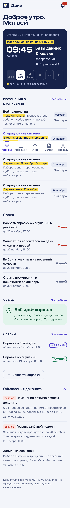
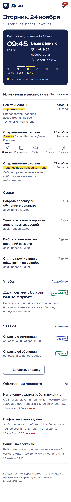
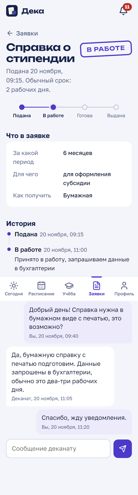
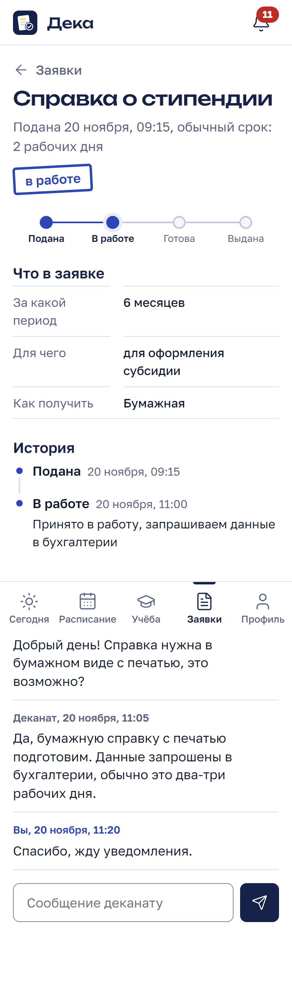
| Признак «сгенерированности» | Что сделали |
|---|---|
| Приветственный заголовок | Заголовок называет контекст: «Вторник, 24 ноября», ниже учебная неделя |
| Фиолетовый акцент на кнопках и навигации | Кнопки цвета обложки зачётки; акцент — синие штемпельные чернила |
| Капс с разрядкой в статусах | Штампы строчными буквами, без разрядки |
| Случайные отступы 14, 18, 22, 26 px и дробные кегли | Сетка 4 px и шкала кеглей 12–13–14–16–18–20–24 (скрипт нормализации) |
| Жирность 650–700 в заголовках | Не выше 600; иерархия размером, а не жирностью |
| Цветные подложки у всех иконок, всё подряд — пилюли | Иконки нейтральные; цвет остался только у изменений расписания (маркер) |
| Пружинящая анимация | Одна кривая без перелёта; движение только в ответ на действие |
Шесть снимков второй версии и исходники получил Codex (GPT-6.2 Sol) с задачей: «перечисли всё, что ещё выглядит шаблонным, и дай не больше десяти правок с точным CSS». Он посчитал контраст, размеры целей нажатия и предложил убрать лишние рамки.
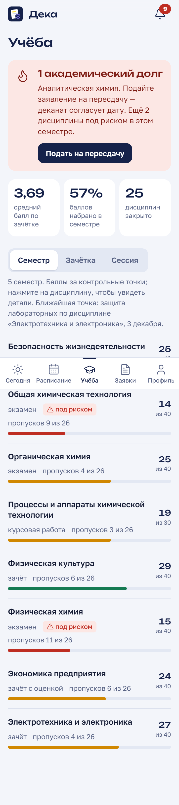
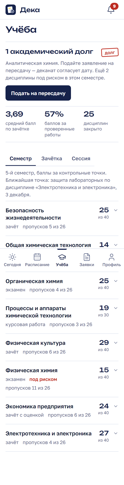
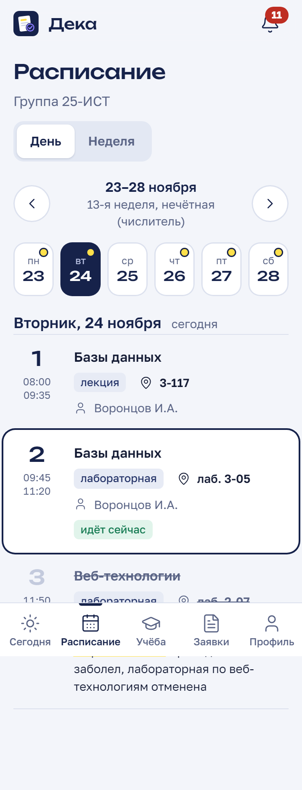
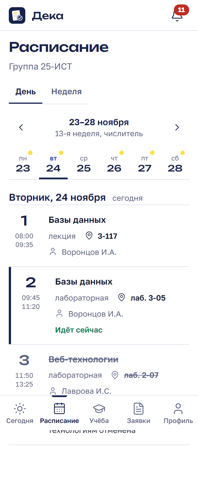
Принято восемь правок из десяти. Две отклонены осознанно: шкалу этапов заявки Codex предлагал убрать как дублирующую, но «статус как у посылки» — главная идея раздела; цветную полосу слева у вывода об учёбе заменили штампом, потому что такая полоса сама шаблонный приём. Спорить с ИИ и объяснять отказ — тоже часть работы с ним.
Тёмно-синяя обложка — панель «ближайшая пара» и боковое меню. Страницы в линейку — списки без карточек. Жёлтый текстовыделитель — всё, что изменилось. Штамп — статус заявки и оценка «зачтено». Эти четыре приёма повторяются на всех экранах и больше нигде не «украшают».
Снимки сделаны автоматически во время сквозного сценария на ширине 360 px (scripts/e2e.py).
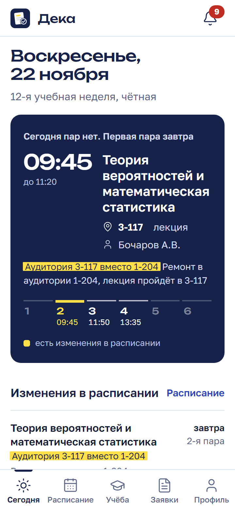
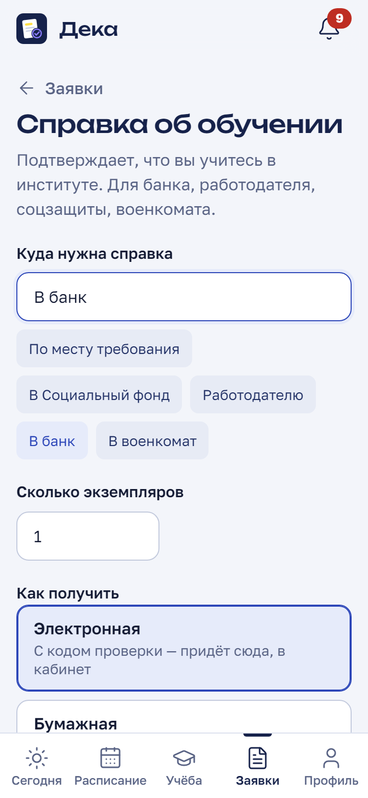
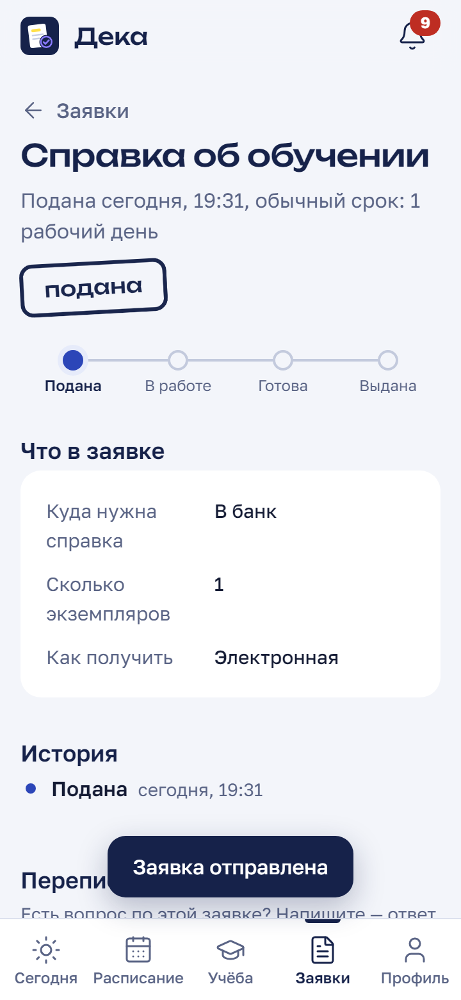
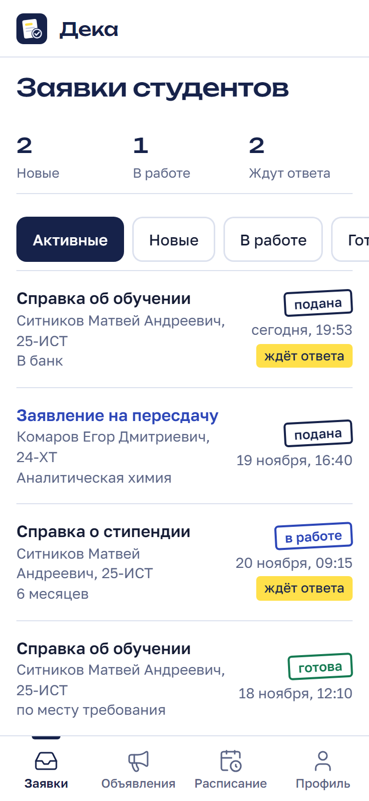
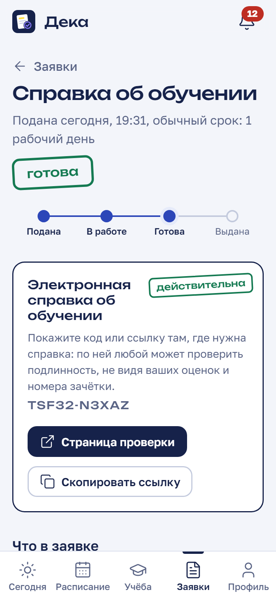
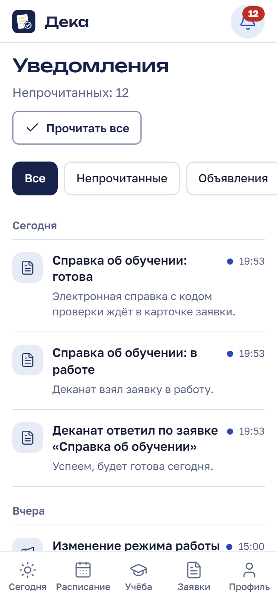
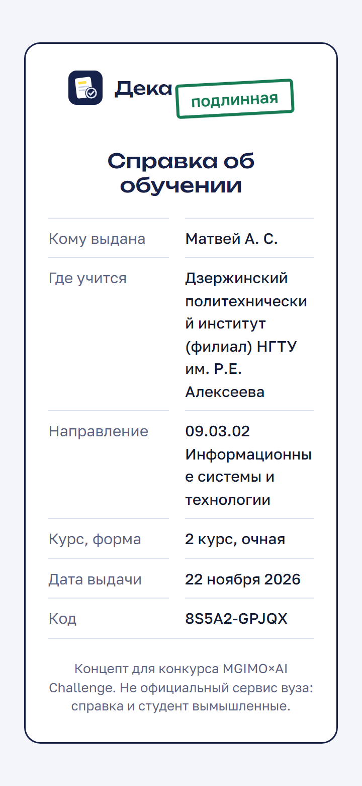
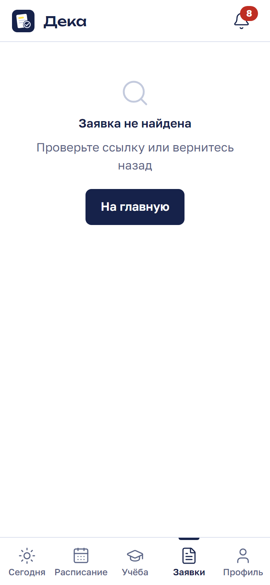
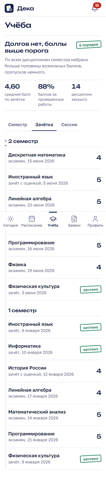
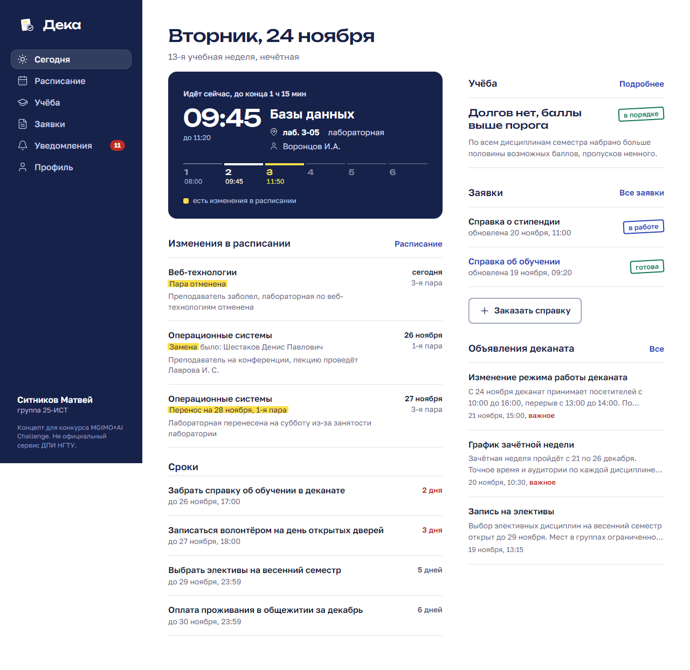
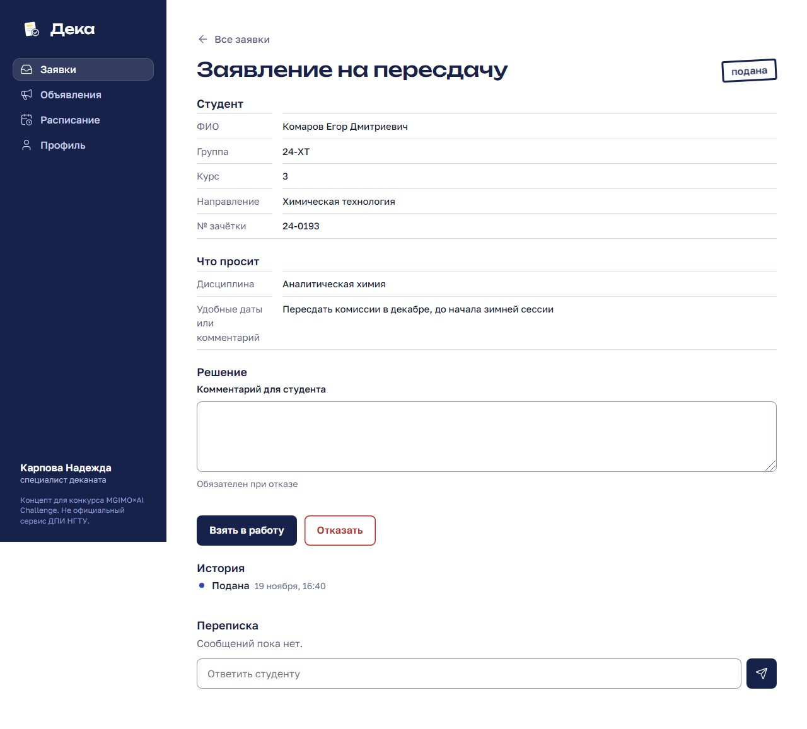
| Ошибка | Кто заметил | Как исправлено |
|---|---|---|
npm test не запускался на Node 24 | Субагент-тестировщик | Шаблон "tests/**/*.test.js" вместо имени папки |
| Противоречие в промпте про год поступления и курс | Claude, перечитывая промпт | Блок «итоговые исходные»; субагент в отчёте перечислил, чему следовал |
| «Сегодня» в браузере считалось по UTC: с 00:00 до 03:00 по Москве была бы вчерашняя дата | Субагент, написавший экран, сам указал на слабое место | Дату отдаёт сервер; в браузере — пояс Europe/Moscow |
| Перенос пары показывался на «Сегодня» дважды | Claude по снимку экрана | Показываем один раз — там, откуда пара ушла |
| Заголовки в каталоге заявок были серыми, как описание | Claude по снимку экрана | Более точный селектор CSS |
| Сквозной тест упал на шаге 9 | Playwright | Ошибка была в самом тесте: два похожих уведомления, селектор стал точнее |
| Codex не запустился: флаг картинок «съел» текст задания | Код возврата 1 | Промпт передаётся через stdin |
| README превратился в «кракозябры» | Claude при проверке | PowerShell 5.1 прочитал UTF-8 как ANSI; файл восстановлен, правки текстов — только инструментом редактирования |
| Пароли демо-аккаунтов в открытом репозитории | Codex, ревью безопасности | Отдельные пароли стенда вне открытого репозитория |
| На боевом стенде вход занимал 10–30 секунд, хотя локально — мгновенно | Claude, замер на стенде после выкладки | Библиотека bcryptjs считает хеш на чистом JavaScript; на тарифе с 0,25 ядра это десятки секунд. Заменена на встроенный в Node scrypt: нативный код, отдельный поток. Локальные тесты такого не ловят — нужна проверка на настоящем стенде |
| Клик по координатам в кабинете хостинга выбрал Варшаву вместо Москвы | Claude по снимку экрана | Выбор по ссылке на элемент, проверка снимком перед следующим шагом |
Общее правило вечера: результат ИИ не принимается на слово. Сервер проверяли тесты другого агента, интерфейс — снимки и браузерный сценарий, безопасность и дизайн — другая модель.
Студент вводит логин и пароль. Сервер сравнивает пароль с хешем и выдаёт браузеру случайный пропуск — cookie. Скрипты страницы прочитать её не могут (HttpOnly), с чужих сайтов она не отправляется (SameSite). В базе лежит не сам пропуск, а его отпечаток: украв базу, войти нельзя.
Пароль не хранится нигде. В базе только необратимый хеш scrypt со своей солью. После пяти неверных попыток за десять минут вход с этого адреса для этого логина ставится на паузу.
Сервер определяет, кто вы, только по пропуску. Номер в адресе страницы ни на что не влияет: каждый запрос к базе содержит условие «и это принадлежит мне». Чужая заявка отвечает «не найдена», как будто её нет. Заявки адресуются случайным набором символов, перебрать их нельзя.
Один файл базы SQLite на постоянном диске хостинга в России. Данные сохраняются между входами и пересборками. Все люди, оценки и номера зачёток вымышленные, почта — на домене example.edu. К системам вуза прототип не подключён.
Их нет. Кабинет не ходит ни в какие сторонние сервисы, поэтому ни в коде, ни в браузере нет ключей. Пароли тестовых аккаунтов открыты намеренно — это аккаунты для жюри; смена пароля в них отключена, чтобы вход нельзя было «угнать».
Проверяющий видит: справка настоящая, имя с инициалами, направление, курс. Не видит: фамилию полностью, группу, зачётку, оценки.
11 тестов на разделение данных, 8 на вход и сессии, 8 на защиту от подбора и подмены, сквозной сценарий, где второй студент открывает ссылку первого, и независимое ревью Codex.
Код, тексты интерфейса, данные, тесты, логотип и этот документ человек не писал и не правил.
Репозиторий содержит всё перечисленное: docs/process-log.md (полный журнал с промптами), docs/screens/ (снимки версий 1 и 2 и сквозного сценария), tests/, scripts/. Концепт для конкурса MGIMO×AI Challenge; не официальный сервис ДПИ НГТУ.